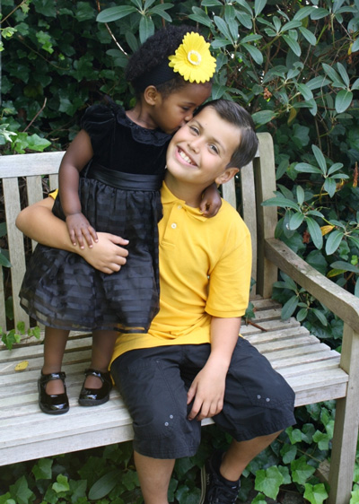

'If you want worrying amounts of self-deprecation, poor humor, under-achievement and nihilism, you're at the right place. I don't know why this is quotes.'
Welcome
This is the About Me of Damian Angelidis, aka the me, a freelance software developer and an avid comsumer of music, movies, news and politics(perhaps too much so), with a background in theater and poetry. If you are interested in the first part, checkout my resume page or my project page to see my history and my accomplishments. If your intrigued by the latter part, you can also go to the blog or poerty page to get takes, reviews, and original writing. If you're not sure, feel free to just explore.

A picture of my sister and I from years ago, because I am too hideous to show my face now.
My Top Ten Movies
- Pan's Labrythn
- The Shawshank Redemption
- Moonlight
- 2001: A Space Odyssey
- Django: Unchained
- Malcolm X
- Lady Bird
- The Dark Night
- Citizen Kane
- An Elephant Sitting Still